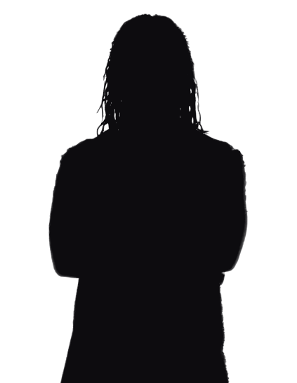
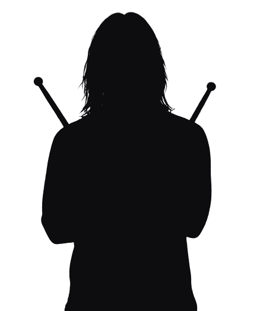
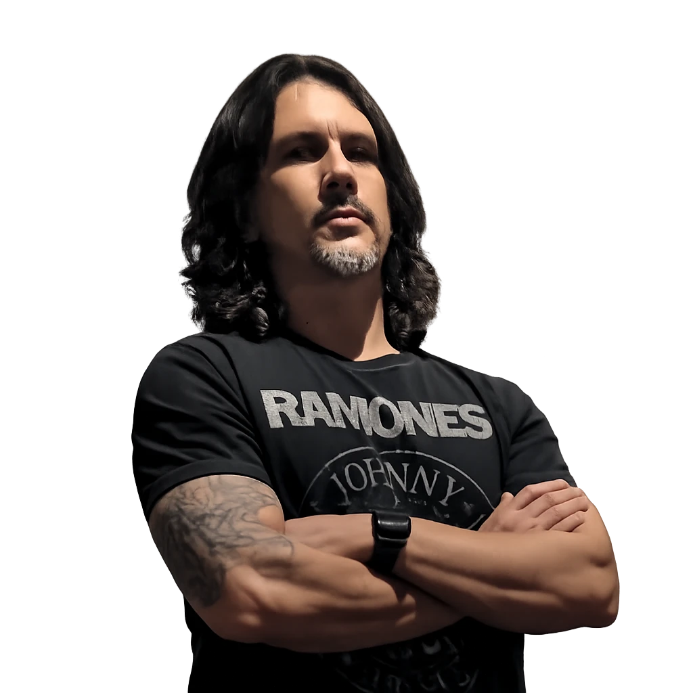

Rock autoral · Curitiba (PR)
Fúria
Mineira
Rock autoral em português, nascido em Montes Claros (MG) e construído em Curitiba (PR). Para nós, a banda é um projeto de vida.


BateristaEm teste

Procura-se baterista
Quero tocarSom sem rótulo
Só músicas autorais, sempre em português. Cada integrante traz referências próprias, e todas desembocam no rock.
- Grunge
- Rock alternativo
- Sludge rock
- Post-punk
- Stoner rock
Primeiro álbum
Primeiro
álbumEm pré-produção
álbumEm pré-produção
10 faixas autorais
A Fúria Mineira já tem contrato com produtor, estúdio e selo em São Paulo para gravar e lançar o primeiro álbum, a primeira grande produção da nova fase da banda.
Em pré-produção
Título, capa e data de lançamento em breve.
A Fúria Mineira não é apenas uma banda.
É um projeto de vida.